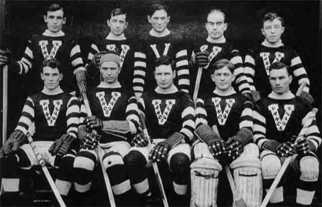
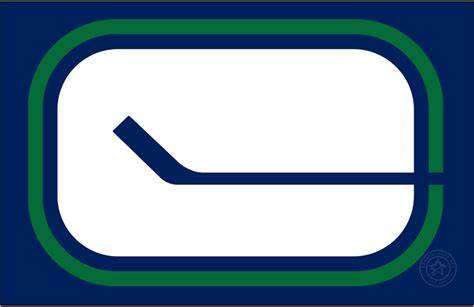
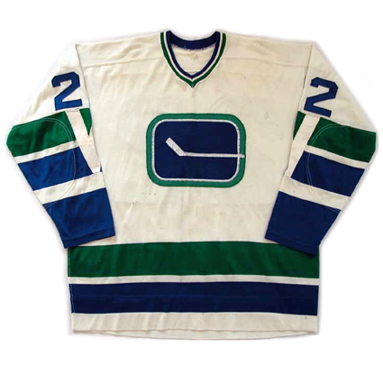
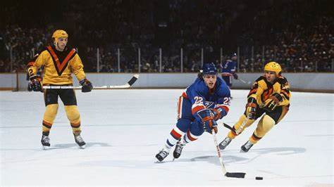
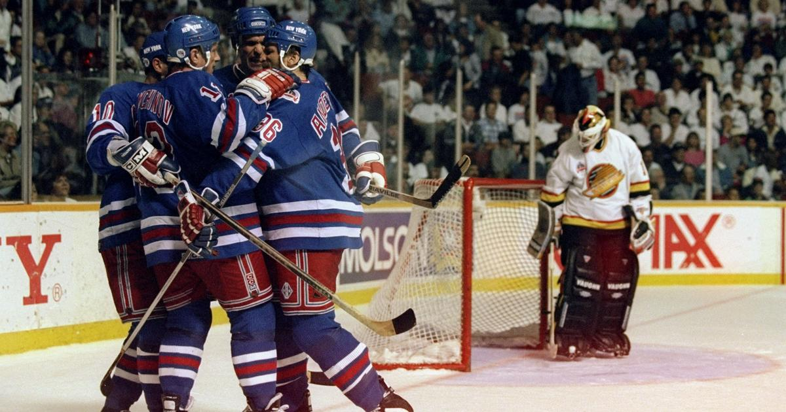
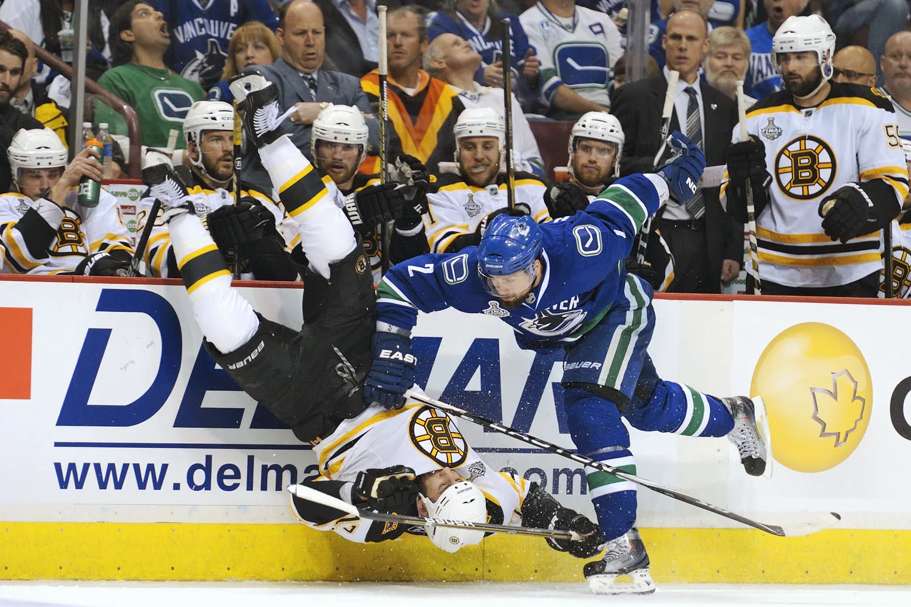
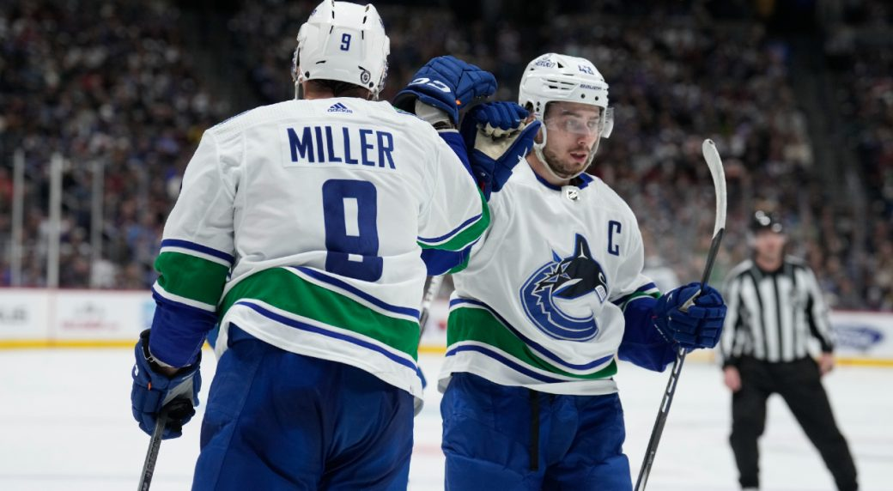
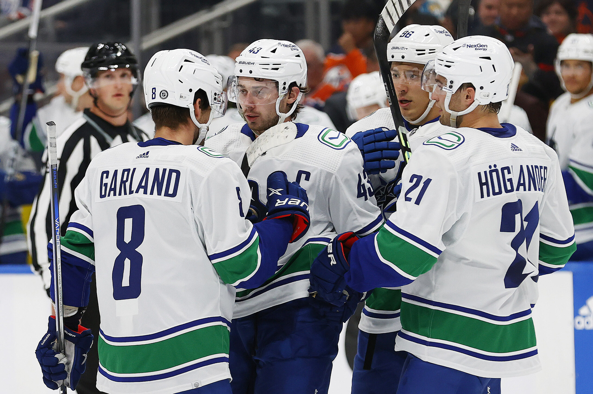
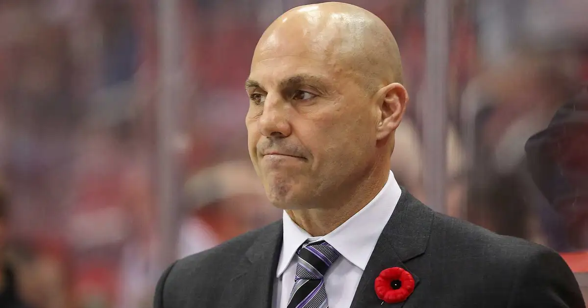
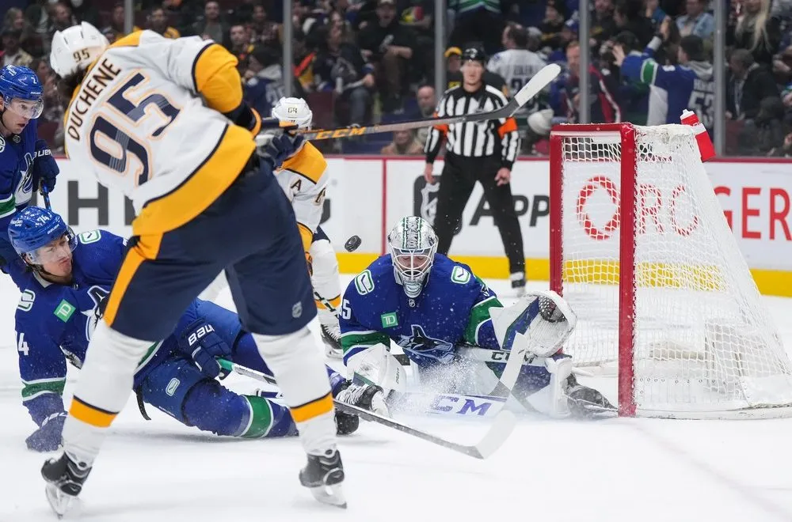

History of the Vancouver Canucks
The Vancouver Canucks are a professional ice hockey team playing in the NHL based in Vancouver. They are part of the NHL's Western Conference and Pacific Division, and their home arena is Rogers Arena in downtown Vancouver.
Early Beginnings

The first professional hockey team based in Vancouver was founded in 1911 and was called the Vancouver Millionaires. From 1926-1970, Vancouver only had minor league hockey teams, but that all changed in 1970.
NHL Introduction


The Vancouver Canucks joined the National Hockey League in 1970 as an expansion team, along with the Buffalo Sabres. The Canucks played in the Pacific Coliseum in their inaugural season. The photo above shows the first even Vancouver Canucks logo, the "Stick in Rink", as well as their first ever jersey.
Stanley Cup runs
The Vancouver Canucks have reached the Stanley Cup Finals 3 times, unfortunatly losing all 3 finals. Here's a recap of all 3 times the Canucks have made it to the finals.
1982 Stanley Cup Final

The Canucks made their first significant playoff impact in the 1982 playoffs. They were matched against the Calgary Flames in the First Round, easily eliminating them in 3 games.
Next, they faced the Los Angeles Kings, which they eliminated in 5 games. They then faced the Chicago Blackhawks in the Conference Finals, where they again prevailed in 5 games.
Vancouver's opponent in their first ever Stanley Cup Final was the New York Rangers, who had already won back to back Stanley Cups, looking to make it 3 in a row. Unfortunatley, the Canucks' fairytale run ended, with them getting swept by the Rangers in 4 games.
1994 Stanley Cup Final

The Vancouver Canucks' 1994 playoff run was full of upsets and drama. Led by captain Trevor Linden, the Canucks finished 2nd in their Division and in the First Round, they would face their division rivals, the Calgary Flames, who finished first in their Division. They fell behind 3-1 in the series, but miraculously won 3 games in a row to take the series 4-3 after a thrilling double-overtime in Game 7.
The Western Conference semifinal and final was more of the opposite however, with the Dallas Stars and the Toronto Maple Leafs proving to be light work for the Canucks, defeating them both in 5 games.
In the finals, they again faced the New York Rangers, proving to be a tougher opponent this time, but still losing the series in 7 games.
2011 Stanley Cup Final

The 2011 Stanley Cup Final was the closest the Canucks got to lifting the cup in recent history. That season, the Vancouver Canucks set their franchise record for most points ever in an 82 game regular season, going 54-19-9. This record helped them take 1st place in the Northwest Divison and also win the Presidents Trophy.
In the first round of the playoffs, they faced the reigning Stanley Cup champions, the Chicago Blackhawks. This proved to be a tough test as Chicago came back from 3 games down to force a game 7 matchup in Vancouver where Alex Burrows scored in overtime to give the Canucks the victory.
Vancouver then beat the Nashville Predators in 6 games to reach the Western Conference Final against the San Jose Sharks. Vancouver prevailed in five games with a double overtime goal scored by Kevin Bieksa to send the Canucks to the Stanley Cup Finals for the third time in franchise history.
Vancouver faced Boston in the Stanley Cup Final, and despite taking 2-0 and 3-2 series leads, the Canucks were just not able to close it out as Boston won two games in a row, including a blowout 4-0 victory in Game 7 in front of the Vancouver fans to win the Stanley Cup. This then sparked riots in downtown Vancouver that led to over $3.7 million dollars in damages, with an additional $5 million being spent on additional staffing costs for prosecuting the rioters.
Recent Years

In recent years, the Canucks have focused on rebuilding and developing young talent. Players like Elias Pettersson, Quinn Hughes, Thatcher Demko, and J.T Miller joined the team, aiming to bring the Stanley Cup to Vancouver. The team's commitment to growth and development continues to energize the fanbase and promises an exciting future.
2023/24 season

The 2023/24 season was the best season the Vancouver Canucks exceeded all odds. The team finished with a 50-23-9 record, good enough for 1st in the Pacific Divison, 3rd in the Western Conference, and 6th in the NHL. This season saw the revival of several players like Brock Boeser, Filip Hronek, and Dakota Joshua.
The team was led by coach Rick Tocchet, who exceeded expectaions in just his first full year as the Canucks' coach. Another positive takeaway from the 2023/24 season was the extremely solid goaltending, with starting goaltender Thatcher Demko playing well all season, as well as backup goaltender Casey DeSmith and rookie Arturs Silovs.

In the playoffs, the Canucks faced the Nashville Predators in the first round, and lost both their goalies due to injury, so they had to rely on rookie Arthurs Silovs to do the job for them, which he did as the Canucks managed to eliminate the Predators in 6 games.

In the second round, the Canucks faced the Edmonton Oilers, still without Thatcher Demko, although Arthurs Silovs had made good enough performances to start over Casey DeSmith. The series was heated, with both teams trading wins, as well as comebacks, and the Canucks even had the chance to close out the series in game 6, but the Oilers forced a game 7 at Rogers Arena with a 5-1 win. This was the Canucks' first game 7 at home since the 2010/11 season when they lost to the Boston Bruins, so the spirits were high ahead of the game. However, the Oilers took a 3-0 lead heading into the 3rd period, and despite the Canucks fighting back and scoring 2 goals in the 3rd, they weren't able to find an equaliser, as their season ended in painful fashion in game 7.